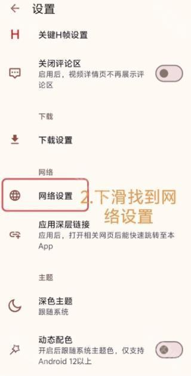
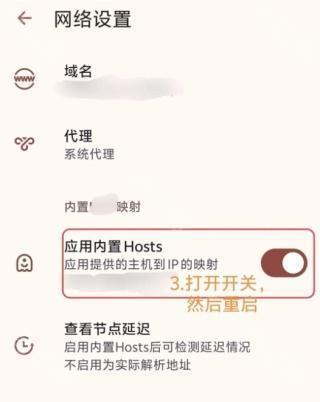
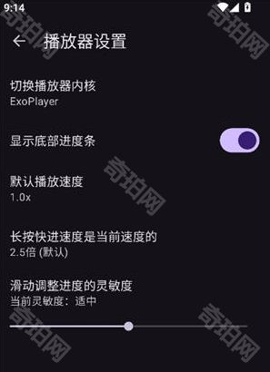

把 HanimeViewer 用起来：从安装到播放的完整实战路线
面向第一次接触 HanimeViewer 的读者，从零开始完成安装、网络配置、播放手势到数据备份的一套完整操作路径，避开新手常见的几个坑。
看完这篇教程，你应该能独立完成 HanimeViewer 的安装、网络连通、手势播放、语言切换和数据备份——不再卡壳在 Cloudflare 验证、手势失灵或换机丢收藏这类老问题上。
准备：先确认这几件事
设备要求：Android 手机（具体最低版本以你的分支发布说明为准），存储空间至少留 500MB 给下载目录，网络环境能正常访问目标站点。
分支与包名：HanimeViewer 的官网因为上游归档，目前有多个社区分支在维护，不同分支的包名、下载源、内置 Hosts 都不一样。别在多个分支之间来回切——跨分支覆盖升级大概率丢数据，认准一个分支就一直用。
前置权限：系统层面允许「安装未知应用」，这是装 APK 的第一道门槛，没开的话安装包点了也弹不出来。
第一步：安装包从哪里拿、怎么装
从下载页拿对应分支的 APK，别在浏览器搜来路不明的二次打包版，兼容性和安全性都没保障。下载路径建议选公共目录（比如 Download/HanimeViewer），不要放应用私有目录——后者在卸载或覆盖升级时会被系统清掉，下载的视频直接没。

拿到 APK 后，文件管理器里点开。首次安装会弹系统安全提示，勾「允许此来源」继续；如果点安装按钮没反应，多半是系统版本太老或存储空间不足。
装完别急着打开——先在桌面长按图标，进入应用信息，把存储、网络通知这些常用权限一次性全开，省得每次用到才被弹窗打断。
第二步：网络连通——别让 Cloudflare 验证卡半小时
HanimeViewer 访问目标站点时，最常见的第一道墙就是 Cloudflare 人机验证。应用内置了 Hosts 和备用域名切换机制，默认情况下打开就能用，但遇到网络波动或验证频率突然升高时，你得学会手动介入。
打开侧边栏 → 网络设置页。这里有几个关键项：
- 内置 Hosts：应用自带一份加速 Hosts，默认开启就好，不用自己改。
- 备用域名切换：主域名加载失败时，在这个页面选备用域名重试——切换后返回首页刷新。
- 代理设置：你自己有代理的填这里；没有就保持关闭，让应用走直连。

如果加载一直转圈或者弹 Cloudflare 验证页面，先在网络设置里换个备用域名试试，不行就去应用设置里清一下 WebView 缓存再重试——90% 的网络类问题在这步就能解决。
第三步：播放手势——比网页端快太多的那套体验
HanimeViewer 从网页端迁移过来的用户最惊讶的就是这一套手势控制——终于不用再在网页那根细长进度条上来回戳。
倍速：播放菜单里选，范围大约 0.5× 到 2.0×。常看某一档的，去播放器设置里设为默认，下次换片自动用上。部分分支还有倍速记忆，切到下一部也不丢。
长按快进：按住视频画面任意位置触发快进，松开回到原速。默认快进速度是当前倍速的 2.5 倍——1.0× 时长按约等于 2.5× 的效果，追长片跳过前奏和片尾特别省心。快进倍率也能在播放器设置里调。
滑动调进度：在画面指定区域上下或左右滑动调整播放进度，灵敏度可设「偏低 / 适中 / 偏高」。这块手势比拖进度条精细得多，回看某个几秒的小片段时比进度条好用十倍。配合关键 H 帧标记功能，能直接跳到你标记过的位置——这套组合玩法的详细说明在hanimeviewer文档里。

手势全失灵时怎么办：先轻触画面呼出控制栏确认不是「控制栏隐藏」状态；再不行就重启应用。极少数情况是系统 WebView 版本过旧，去应用商店更一下系统 WebView 就能恢复。
第四步：画中画——边干别的边追
画中画（Picture-in-Picture）让视频以小窗形式悬浮在屏幕上，退出 HanimeViewer 后视频继续播放。回消息、查资料、开地图导航时都能挂着看。
开启方式很简单：播放中按返回键退出全屏界面，小窗就会自动出现。如果没弹出来，99% 是系统层面权限没开——进手机系统设置 → 应用 → HanimeViewer → 权限，找到「画中画」把它允许。
小窗可以拖动位置、双指放大缩小，点开小窗回到完整播放器。注意画中画只影响显示方式，播放链路没变——小窗里视频卡顿的话，处理方式和正常播放一致：降画质、换播放内核、查网络，不要怪小窗功能本身。
第五步：影片语言——繁简体一键切
目标站点的内容很多是繁体中文呈现的。HanimeViewer 提供「影片语言」设置，切换的是内容的语言口径——应用界面语言跟随安装包和系统语言，这是两回事。
路径：侧边栏 → 设置 → 找「影片语言」（有的分支叫「播放语言」或「内容语言」），弹窗里选繁體中文或简体中文，保存后回到浏览页刷新就行。
切换后部分页面的展示文案会变，已缓存的历史页面需要手动刷新才能看到效果。还有一点要记住：某些作品本身没有简体版本，切换后它们依然显示原标题，这不是设置失效——是内容侧的客观限制。
第六步：关键 H 帧、下载路径和备份——别等换机才想起
「关键 H 帧」是 HanimeViewer 的一个特色功能：你可以在视频播放中标记重要时间点，之后回看时直接跳到标记位置。标记数据可以通过账号登录同步到云端，也可以手动备份导出。
下载目录强烈建议放到公共目录。设置里找到下载路径，把它指向 Download 或 Movies 这类公共文件夹，私有目录下的文件会在卸载或清除应用数据时被系统直接删除——这是新手丢视频的头号原因。
最后说备份。值得备份的数据有四类：收藏 / 稍后观看 / 播放清单、观看历史、关键 H 帧标记、下载的视频。前三项在本地数据库里，清应用数据或卸载就没了；下载的视频在下载目录里，取决于你放的是不是公共目录。
备份操作：设置里找备份入口，导出备份文件存到网盘或电脑，换机后在同一分支上恢复。跨分支恢复不保证兼容，这一点务必记住——想换分支就先把旧数据该同步的同步、该导出的导出，再干净重装。
HanimeViewer 的这套玩法还有更深的进阶空间：播放内核切换来应对不同机型的兼容问题、Cloudflare 人机验证的手动 Cookie 导入、订阅与更新提醒的使用……有兴趣的话可以继续往这些方向挖。这套整理资料我也在 GitHub、Gitee、GitCode 三个平台各存了一份，不同网络环境任选一个能通的。